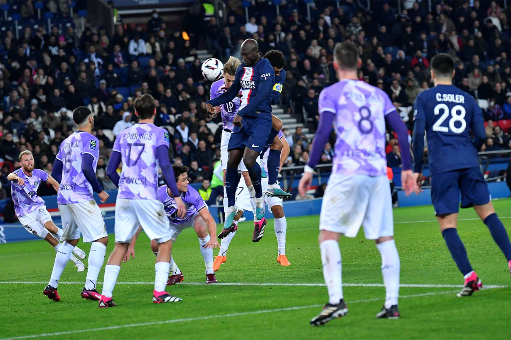
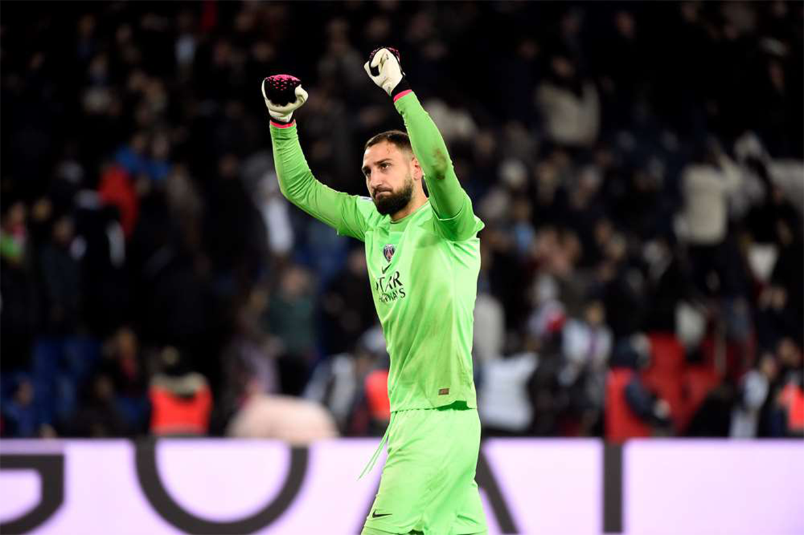
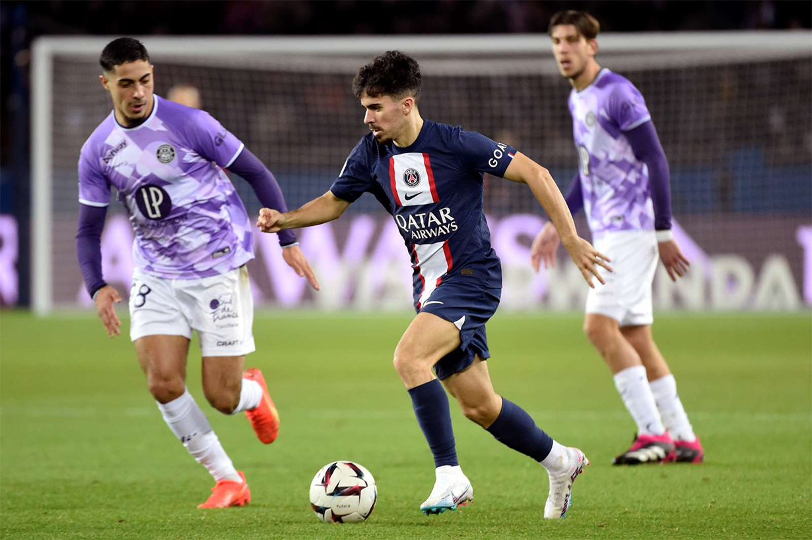
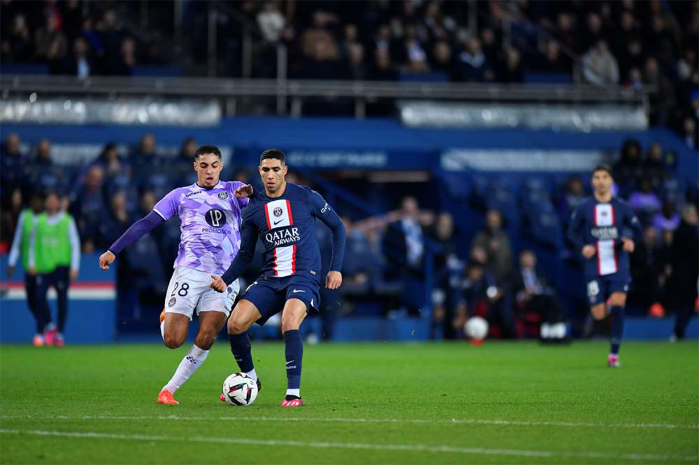
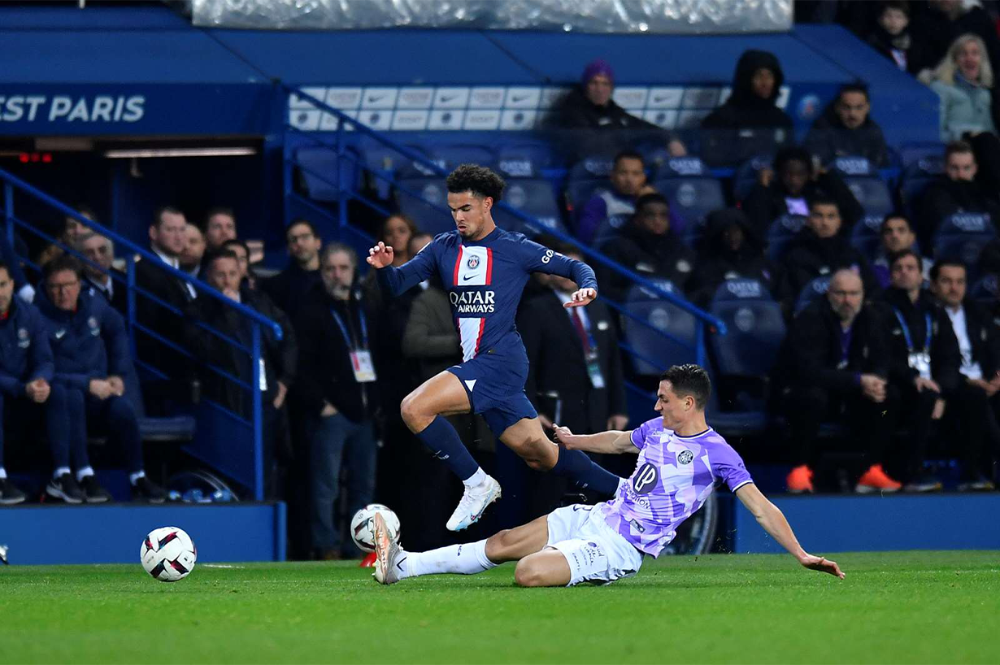

As the Parisians travel to Toulouse for Matchday 2 of Ligue 1 on Saturday 19 August at 21:00, we take a closer look at the forthcoming encounter at the Stadium. We take a look at what's in store for the Rouge et Bleu when they take on TFC, including memories, standings, dynamics and players to watch.
Paris Saint-Germain picked up their first point of the season with a 0-0 draw against FC Lorient on Saturday. The club from the capital are now two points behind Stade Rennais FC, AS Monaco, Stade Brestois 29, Olympi que de Marseille and RC Strasbourg, who all won their opening games, and Toulouse FC, the Parisians' future opponents.
Meanwhile, Toulouse made a perfect start to their campaign with their first win coming in injury time at FC Nantes. Having finished 13th in the league last term, Les Violets will once again be aiming to stay up as quickly as possible before setting their sights on bigger things.
Carles Martinez Novell's side, who won the last Coupe de France, are gearing up for an exceptional season that will culminate in a European Cup campaign, fourteen years after their last appearance on the continental stage. Buoyed by their recent victories over Osasuna (Spain) and AS Roma (Italy), Toulouse confirmed their good form on Matchday 1 of Ligue 1. On Saturday evening, the Rouge et Bleu will be up against a team full of confidence.
The two sides last met on Matchday 22 of the 2022-2023 season on 4 February. The visitors made life difficult for the Parisians at the Parc des Princes, but they still managed to win. However, it was Toulouse who struck first, Branco Van den Boomen opening the scoring with a free-kick that left Gianluigi Donnarumma helpless (0-1, 20'). Paris responded just after the half-hour mark when Marquinhos headed against the post from a cor ner.
But five minutes later, Paris's perseverance was rewarded when Achraf Hakimi cut inside from the right and curl ed a superb left-footed shot to level the scores (1-1, 38'). In the second half, it was Léo Messi who gave Paris Saint-Germain the lead just before the hour mark. Following another fine piece of work from Hakimi, the Argen tinian international collected the ball on the edge of the area and crucified Maxime Dupé with a left-footed shot (2-1, 58'). Thanks to an imperious Gigio Donnarumma, Toulouse were unable to get back into the game and saw Paris win after a lively battle.
Carles Martinez Novell and his team are mainly playing a 4-2-3-1 system. In goal, the very young Guillaume Restes (18) seems to be taking over from Maxime Dupé, now a former Toulouse goalkeeper. Despite his obvious lack of experience, this pure product of Toulouse's youth system proved decisive against Nantes in his very first official match for the first team. In central defence, the Rasmus Nicolaisen/Logan Costa pairing looks set to hold its own. Nicolaisen was already a key figure for TFC last season, having made the most clearances (152) and blocked the most balls (58). As for Logan Costa, the Cape Verde international seems to have got the better of Frenchman Anthony Rouault, who was a regular starter last season.
On the right flank, Denmark's Mikkel Desler, the Toulouse defender who made the most tackles last season (38), has established himself as the starter ahead of his Norwegian counterpart Warren Kamanzi. On the left, Chilean international Gabriel Suazo has a clear path, as his understudy Oliver Zandén is still unavailable through injury. The Chilean full-back is capable of accompanying his team-mates' attacks, and was the Toulouse defender with the highest percentage of successful dribbles last season (64.7%).
In midfield, it is the Vincent Sierro/Cristian Cásseres pairing that seems to be making a name for itself. The for mer arrived in January from Young Boys Berne in Switzerland and has been given the captain's armband by TFC's Spanish coach for the coming season. Comfortable in a deep-lying playmaker's role, he is joined by Vene zuelan international Cristian Cásseres, freshly arrived from New York Red Bulls (USA). A technically gifted and rugged player, he has already found his place in Toulouse's starting eleven. As for Denis Genreau, the Australian international is a little higher up in the No.10 position. After a successful end to last season, he has a head start over new signings Niklas Schmidt and César Galabert.
On the left flank, Moussa Diarra and Franck Magri are vying for a starting place. The former usually plays in a mo re defensive role, while the latter is discovering Ligue 1 after a promising season with SC Bastia (Ligue 2) last year, and can also play on the right. The two Toulouse players have been brought in to compensate for the inju ry to Algerian international Farès Chaïbi (8 goals, 7 assists last season), who returned to the squad against Nante s and could potentially start the game against the Parisians.
On the right wing, Zakaria Aboukhlal (15 goals, 5 assists last season) is one of Les Violets' main weapons. As hard-hitting as ever, the Moroccan international was Toulouse's most successful dribbler last season (42). Last but not least, Thijs Dallinga is the undisputed starter in the Toulouse attack. There is no doubt that the man who was TFC's top scorer last season in all competitions (18 goals, 3 assists) will once again want to put his finishing skills to good use and cause problems for the Parisian defence.
Despite their different skill sets, Manuel Ugarte and Vincent Sierro are set to do battle in midfield this Saturday. Last season, the former Sporting CP (Portugal) midfielder completed far more progressive passes than his Toul ouse counterpart (120 compared to 49). Generally speaking, the Uruguayan international is more successful with his passes than the Swiss midfielder (91.6% versus 78.7%). He also made more key passes, with 15 last sea son compared to Vincent Sierro's 11.
On the other hand, Toulouse's new captain was more accurate in his attempts on goal, with 33.3% of shots on tar get compared to 15.8% for the young Uruguayan. A technically gifted player, Vincent Sierro had a particularly hig h percentage of successful dribbles (75% compared to 54.8% for Manuel Ugarte). Lastly, the Swiss midfielder committed fewer fouls than his future opponent, with only 37 fouls called against him last season compared to 64 against the new Parisian midfielder.
Back to list